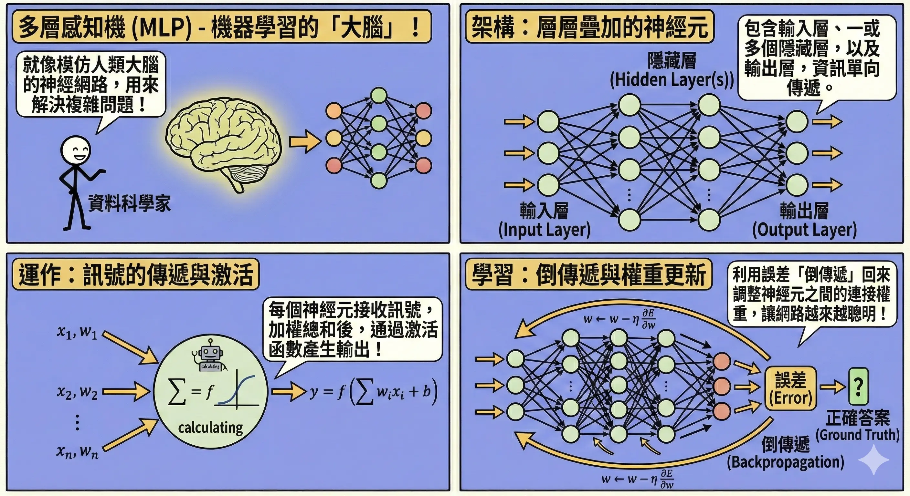
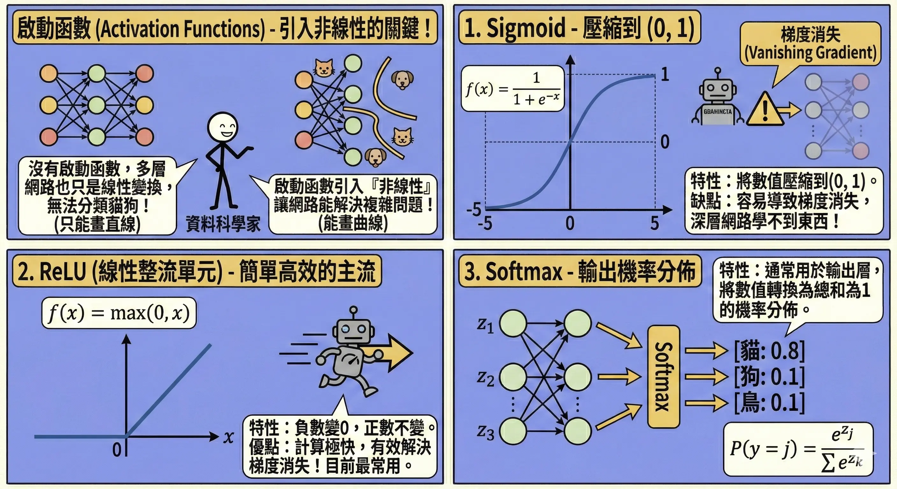
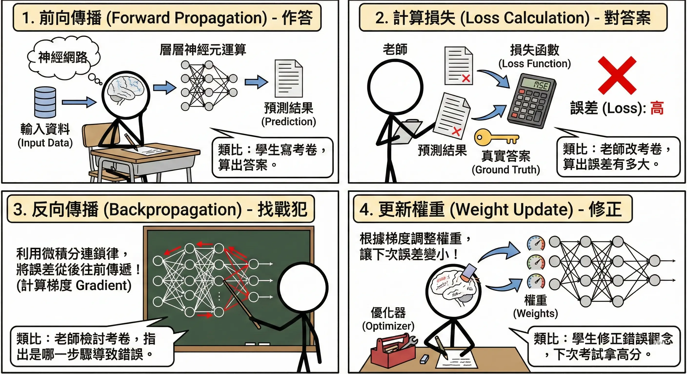
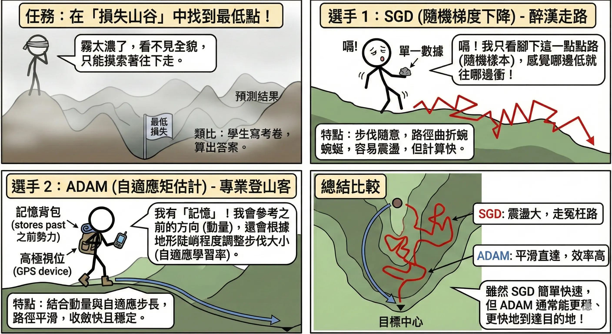
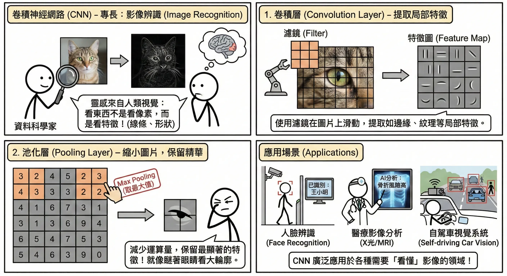
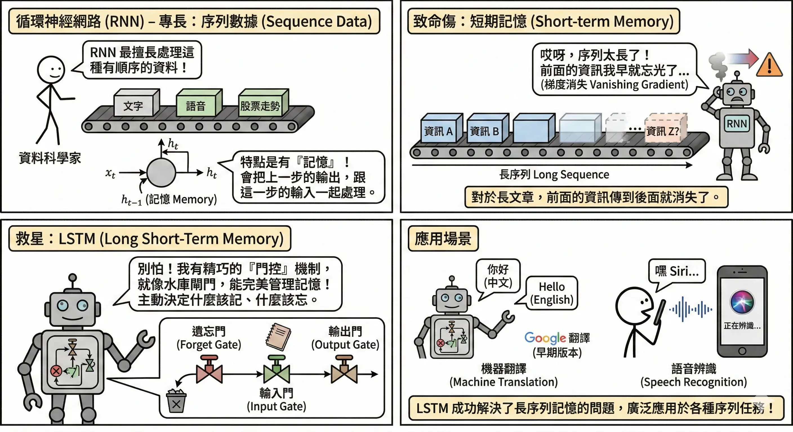
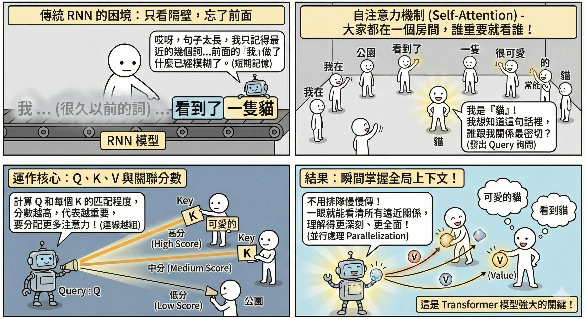
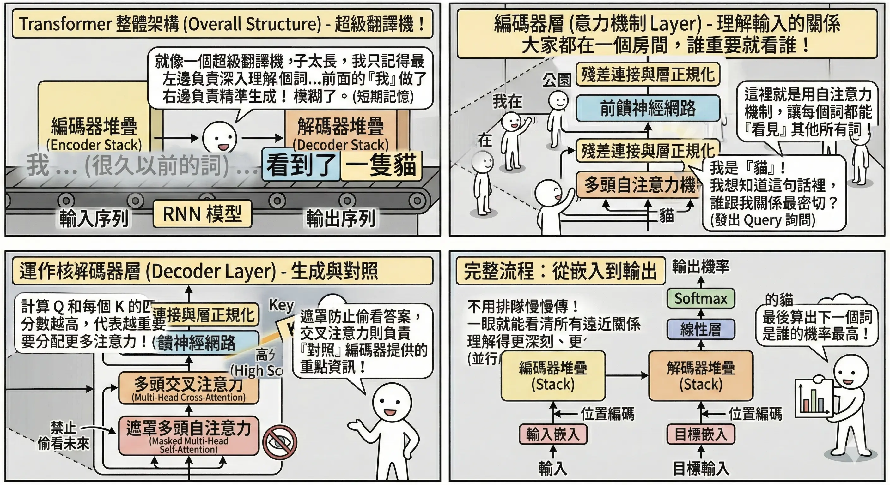
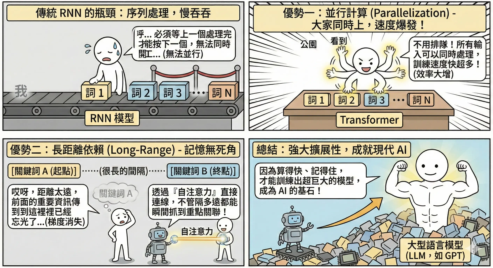

神經網路架構演進 (Neural Network Architecture Evolution)
深度學習 (Deep Learning) 是機器學習的一個分支，靈感來自人類大腦的神經元運作方式。從簡單的感知機到如今強大的 Transformer，神經網路架構經歷了數十年的演進，每一次的突破都帶來了 AI 能力的飛躍。
基礎神經網路
多層感知機 (MLP, Multi-Layer Perceptron)
這是最基礎的深度學習架構，也稱為全連接網路 (Fully Connected Network)。
- 結構：
- 輸入層 (Input Layer)：接收原始資料（如圖片的像素值）。
- 隱藏層 (Hidden Layers)：中間的黑盒子，負責提取特徵。層數越多，能學到的特徵越抽象、越複雜。
- 輸出層 (Output Layer)：給出最終預測（如分類機率）。
- 運作原理：每個神經元接收上一層的訊號，乘上權重 (Weight)，加上偏差 (Bias)，最後通過啟動函數輸出給下一層。
- 公式：\[ y = \sigma(\sum_{i=1}^{n} w_i x_i + b) \]
- xi: 輸入訊號
- wi: 權重 (Weight)，代表該輸入的重要性
- b: 偏差 (Bias)，調整啟動門檻
- 𝛔: 啟動函數 (Activation Function)
- 公式：\[ y = \sigma(\sum_{i=1}^{n} w_i x_i + b) \]

啟動函數 (Activation Functions)
如果沒有啟動函數，神經網路不管有幾層，本質上都只是線性變換（矩陣相乘），無法解決複雜的非線性問題（如分類貓和狗）。啟動函數引入了非線性。
- Sigmoid：
- 公式：\[ f(x) = \frac{1}{1 + e^{-x}} \]
- 特性：將數值壓縮到 (0, 1) 之間。
- 缺點：容易導致梯度消失 (Vanishing Gradient)，即在深層網路中，誤差訊號傳不回去，導致前面的層學不到東西。
- ReLU (Rectified Linear Unit)：
- 公式：\[ f(x) = \max(0, x) \]
- 特性：負數變 0，正數不變。
- 優點：計算極快，且有效解決了梯度消失問題。是目前最常用的啟動函數。
- Softmax：
- 公式：\[ P(y=j) = \frac{e^{z_j}}{\sum_{k=1}^{K} e^{z_k}} \]
- 特性：通常用於輸出層。將一組數值轉換為機率分佈（總和為 1）。例如：[貓: 0.8, 狗: 0.1, 鳥: 0.1]。

反向傳播 (Backpropagation) 與優化器(Optimizer)
神經網路是如何「學習」的？這是一個試誤 (Trial and Error) 的過程。
- 前向傳播 (Forward Propagation)：
- 作答：資料從輸入層進入，經過層層神經元運算，最後輸出一個預測結果。
- 類比：學生寫考卷，算出答案。
- 計算損失 (Loss Calculation)：
- 對答案：使用損失函數 (Loss Function)（如 MSE 或 Cross-Entropy）比較「預測值」與「真實答案」的差距。
- 類比：老師改考卷，算出考了幾分（誤差有多大）。
- 反向傳播 (Backpropagation)：
- 找戰犯：利用微積分的連鎖律 (Chain Rule)，將誤差從後往前傳遞，計算每個神經元的權重對這個誤差「貢獻」了多少（計算梯度 Gradient）。
- 類比：老師檢討考卷，指出是哪一個步驟算錯導致最後答案錯誤。
- 更新權重 (Weight Update)：
- 修正：利用優化器 (Optimizer) 根據梯度調整權重，讓下次誤差變小。
- 類比：學生修正錯誤觀念，下次考試就能拿高分。

常見優化器 (Optimizer)： 負責決定「如何調整權重」的演算法。
- SGD (Stochastic Gradient Descent, 隨機梯度下降)：
- 機制：每次只看一小批資料就調整方向。
- 類比：盲人下山。他看不見全貌，只能用腳探測四周，哪邊最陡就往哪邊走一步。路徑可能會彎彎曲曲，震盪較大。
- ADAM (Adaptive Moment Estimation)：
- 機制：結合了動量 (Momentum) 與自適應學習率。
- 類比：滾下山的重球。
- 動量：球有慣性，如果之前一直往某個方向滾，即使遇到小坑洞（局部最佳解）也會衝過去，不會卡住。
- 自適應：在平坦的地方滾快一點，在陡峭的地方滾慢一點。
- 地位：目前最常用的預設優化器。

經典深度架構
卷積神經網路 (CNN, Convolutional Neural Networks)
- 專長：影像辨識、電腦視覺 (CV)。
- 靈感：人類視覺皮層對邊緣、形狀的反應。我們看東西不是一個像素一個像素看，而是看特徵（線條、圓圈、眼睛、鼻子）。
- 關鍵元件與運作流程：
- 卷積層 (Convolution Layer) - 提取特徵：
- 運作：使用一個小的濾鏡 (Filter/Kernel)（例如 3x3 的矩陣）在圖片上滑動掃描。
- 功能：每個濾鏡負責抓一種特徵（如垂直線、水平線、圓弧）。掃描後的結果稱為特徵圖 (Feature Map)。
- 類比：拿著手電筒在黑暗的房間掃描，照到的地方才看得到細節。或者像用「篩子」，把符合特定形狀的特徵篩出來。
- 池化層 (Pooling Layer) - 重點濃縮：
- 運作：將圖片分區（例如 2x2），只保留區內最重要的數值（Max Pooling 取最大值）。
- 功能：
- 降維：讓圖片變小，減少運算量。
- 抗雜訊：保留最顯著的特徵，忽略不重要的細節（平移不變性）。
- 類比：把高畫質照片轉成馬賽克風格，雖然模糊了，但還是看得出是貓還是狗（只看大輪廓）。
- 攤平 (Flatten) 與 全連接層 (Fully Connected Layer)：
- 運作：將處理好的二維特徵圖「拉直」成一維向量，丟進傳統的神經網路 (MLP) 進行最終分類。
- 類比：把拼圖的碎片（特徵）全部蒐集起來，拼出最後的結論。
- 卷積層 (Convolution Layer) - 提取特徵：
- 應用：人臉辨識、醫療影像分析 (X光/MRI)、自駕車視覺系統。

循環神經網路 (RNN, Recurrent Neural Networks)
- 專長：序列數據（文字、語音、股票走勢）。
- 運作機制：
- 具有記憶 (Memory) 功能。神經元會有一個「迴圈」，把上一步的輸出 ht-1 傳給自己，跟這一步的輸入 xt 一起處理。
- 類比：像閱讀文章。你讀到第五個字時，腦中還記得前四個字的含義，這樣才能理解整句話的意思。
- 致命傷：梯度消失 (Vanishing Gradient)：
- 問題：對於太長的序列（如長篇小說），前面的資訊傳到後面會越來越弱，最後完全消失。
- 例子：「我出生在法國……（過了 500 字）……所以我會說流利的法語。」傳統 RNN 讀到最後時，早就忘了前面的「法國」，填不出「法語」。
- 救星：LSTM (Long Short-Term Memory, 長短期記憶網路)：
- 核心概念：設計了一條專屬的「高速公路」（Cell State）來傳遞長期記憶，並透過三個「閘門」來控制資訊流。
- 三大閘門 (Gates)：
- 遺忘門 (Forget Gate)：決定要丟掉什麼舊資訊。
- 例子：看到新的主詞「她」，就把舊主詞「他」的性別資訊忘掉。
- 輸入門 (Input Gate)：決定要存入什麼新資訊。
- 例子：把「她」的性別資訊存進記憶。
- 輸出門 (Output Gate)：決定當下要輸出什麼。
- 例子：因為主詞是單數「她」，所以動詞要輸出單數型態 (is)。
- 遺忘門 (Forget Gate)：決定要丟掉什麼舊資訊。
- 類比：像一位精明的秘書管理老闆的行程表。
- (遺忘) 刪除已取消的會議。
- (輸入) 寫入新的預約。
- (輸出) 在適當的時間提醒老闆該開會了。

Transformer 與注意力機制
2017 年 Google 發表論文《Attention Is All You Need》，徹底改變了 NLP 領域，也開啟了大型語言模型 (LLM) 的時代。
自注意力機制 (Self-Attention)

這是 Transformer 的靈魂，讓模型能理解字與字之間的關係。
- 核心概念：雞尾酒會效應 (Cocktail Party Effect)。
- 在吵雜的派對中，你的耳朵會自動過濾背景雜音，聚焦 (Attend) 在你想聽的那個人說話。
- 同樣地，當模型讀到一個字時，它會去「關注」句子中其他相關的字，而忽略不相關的字。
- 運作機制 (Q, K, V)： 每個字都會被轉換成三個向量：
- Query (Q, 查詢)：我想找什麼？（像拿著麥克風問問題）
- Key (Key, 索引)：你是什麼？（像每個人身上掛的名牌）
- Value (Value, 內容)：你的實質內容是什麼？（像這個人腦中的知識）
- 流程：
- 拿我的 Q 去跟所有人的 K 算相似度（點積 Dot Product）。
- 相似度越高，代表我們關係越密切（Attention Score 越高）。
- 根據相似度，把對方的 V 加權總合起來，變成我對這個字的理解。
- 類比：圖書館找書。
- Q：你想找的主題（如「人工智慧」）。
- K：書背上的分類標籤。
- V：書裡的內容。
- 你會把 K 跟 Q 符合的書挑出來，閱讀裡面的 V。
- 多頭注意力 (Multi-Head Attention)：
- 概念：不只用一種觀點看事情，而是用多個「頭」（濾鏡）同時看。
- 例子：讀一句話時，Head 1 關注「文法結構」，Head 2 關注「代名詞指涉」，Head 3 關注「情緒」。最後把大家的看法綜合起來，理解就更全面。
- 實例：“The animal didn’t cross the street because it was too tired.”
- 當模型讀到 “it” 時，Attention 機制會算出它跟 “animal” 的關聯度最高（因為 tired 通常形容動物），而不是 “street”。這讓模型真正「讀懂」了代名詞。

Transformer 架構優勢
- 並行計算 (Parallelization)：
- RNN 必須一個字一個字讀（讀完第一個字才能讀第二個），無法平行化。
- Transformer 可以一次讀入整篇文章，利用 GPU 的強大平行運算能力，訓練速度大幅提升。這使得訓練像 GPT-4 這種超巨大模型成為可能。
- 長距離依賴 (Long-range Dependency)：
- 透過 Attention，無論兩個字距離多遠，都能直接建立關聯，不再有 LSTM 的記憶長度限制。

Encoder 與 Decoder 家族
Transformer 由 Encoder（編碼器）和 Decoder（解碼器）組成，後來衍生出三大流派：
- Encoder-only (如 BERT)：
- 擅長「理解」文本。
- 應用：情感分析、分類、問答系統。
- Decoder-only (如 GPT 系列)：
- 擅長「生成」文本。像接龍一樣，預測下一個字。
- 應用：聊天機器人、文章寫作、程式碼生成。
- Encoder-Decoder (如 T5, Bart)：
- 同時具備理解與生成能力。
- 應用：機器翻譯（英文入 → 理解 → 生成 → 中文出）、摘要生成。
本章總結與考點提示
核心概念回顧
深度學習是 AI 的核心引擎。
- 基礎元件：
- MLP：全連接，基礎結構。
- Activation：ReLU (防梯度消失)、Sigmoid (二元分類)、Softmax (多類別)。
- Backpropagation：誤差反向傳播，更新權重。
- 三大架構：
- CNN：影像霸主。卷積 (特徵) + 池化 (降維)。
- RNN/LSTM：序列專家。有記憶，但怕長序列 (梯度消失)。
- Transformer：NLP 新皇。Self-Attention (平行運算、長距離依賴)。
AI 應用規劃師認證考點
常考題型與解題策略：
- 架構對應題：
- 例題：「人臉辨識系統通常使用哪種架構？」
- 解答：CNN。
- 例題：「股價預測或語音辨識通常使用哪種架構？」
- 解答：RNN 或 LSTM。
- 例題：「ChatGPT 是基於哪種架構？」
- 解答：Transformer。
- 功能題：
- 例題：「CNN 中池化層 (Pooling) 的主要功能是什麼？」
- 解答：降低維度（減少運算量）並保留重要特徵。
- 例題：「為什麼 LSTM 比傳統 RNN 好？」
- 解答：解決了梯度消失問題，能記住更長的序列。
- 啟動函數題：
- 例題：「目前最常用的隱藏層啟動函數是什麼？」
- 解答：ReLU。因為計算快且無梯度消失問題。
記憶口訣
- CNN：「看圖」（卷積）。
- RNN：「讀書」（序列）。
- Transformer：「劃重點」（Attention）。
延伸思考
- 為什麼 Transformer 可以取代 RNN？（因為它可以平行運算，速度快很多，且 Attention 機制解決了長距離記憶問題）。